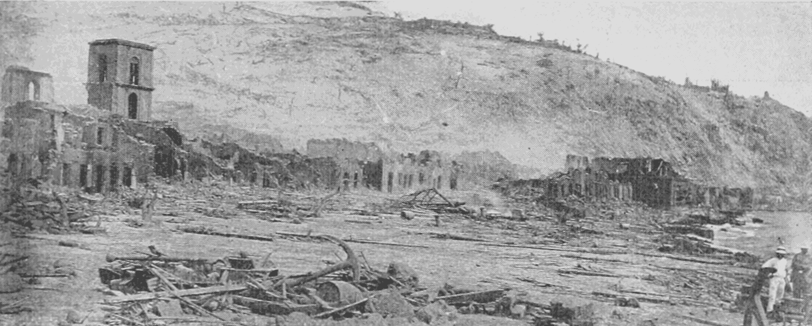

La montagne Pelée est un volcan actif situé dans le Nord de la Martinique.
La montagne, un stratovolcan gris calco-alcalin, est notamment connue pour son éruption de 1902 qui a entraîné la destruction de la ville de Saint-pierre située à ses pieds et au cours de laquelle près de 30 000 personnes sont mortes.
Cette éruption a servi à caractériser le type éruptif péléen tirant son nom du volcan.
